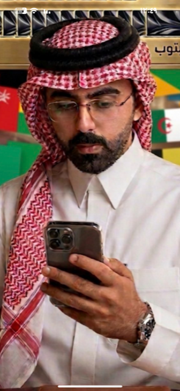
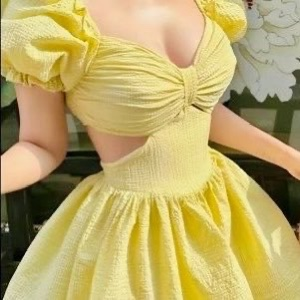

عيش أجواء المونديال
محاكاة تجربة كأس العالم بكل ما تحمله من منافسة وتفاعل وحضور جماهيري.
من فكرة بدأت بتغريدة… إلى محاكاة عاشها المشاركون، واكتشفوا من خلالها العالم والمملكة.

بدأت فكرة المحاكاة مع عزيز قوم، الذي أراد أن يصنع تجربة تعيش أجواء المونديال على منصة إكس، وتتجاوز متابعة المباريات والنتائج إلى التفاعل، والمعرفة، وصناعة المحتوى.
ومن فكرة بدأت بتغريدة، تحولت المحاكاة إلى تجربة متكاملة شارك فيها 64 منتخبًا و320 مشاركًا، وامتدت لتجمع بين المنافسة والإبداع والاكتشاف.
وكانت الفكرة منذ بدايتها تحمل هدفًا أبعد من كرة القدم؛ أن تكون المحاكاة مساحة نتعرف من خلالها على العالم، ثم نعود إلى المملكة لنكتشفها، ونقترب أكثر من رؤيتها واستعداداتها لمونديال 2034.
أما تفاصيل الرحلة، وما بذله صاحب الفكرة واللجنة في تحويلها من فكرة إلى واقع، فله حكاية أخرى.
محاكاة تجربة كأس العالم بكل ما تحمله من منافسة وتفاعل وحضور جماهيري.
منح كل منتخب مساحة للتعريف ببلده وثقافته وهويته، في جولة سريعة حول العالم.
التعرّف على مناطق المملكة ومدنها وتراثها وثقافتها ومعالمها وتنوعها.
تعليم استخدام الذكاء الاصطناعي وتوظيفه في مختلف مجالات الحياة والعمل وصناعة المحتوى.
التعرّف على رؤية السعودية 2030، ومشاريعها المستقبلية، والاستعدادات لمونديال 2034.
تحويل البحث والتعلّم واكتساب المعرفة إلى جزء من تجربة المنافسة.
فتح المجال للمواهب لصناعة المحتوى والتصميم والفيديو والإعلام والحوار.
لم تبقَ الأهداف مجرد عناوين؛ فقد تحولت خلال الرحلة إلى تجربة عاشها المشاركون بأنفسهم. بدأت المنتخبات بالبحث عن المملكة، والتعريف بمناطقها ومدنها ومعالمها وثقافتها، وكأن المحاكاة تحولت في جانب منها إلى دعوة لاكتشاف السعودية وجمالها.
وفي الوقت نفسه، اتسعت دائرة المعرفة لتصل إلى ما وراء المشهد؛ إلى ما تقوم به المملكة في التنمية، وما تبنيه من مشاريع وخدمات، وما توظفه من تقنيات في طريقها نحو المستقبل ورؤية السعودية 2030.
بدأت الرحلة من العالم؛ كل منتخب يعرّف ببلده وثقافته وهويته، فكانت أشبه بجولة سريعة حول العالم. ثم عادت المنتخبات إلى معسكراتها في المملكة، لتبدأ رحلة أخرى مختلفة: رحلة اكتشاف السعودية.
ومع اتساع المعرفة وتنوع الموضوعات، كان عزيز قوم يعيد توجيه الرحلة كلما ابتعدت عن مسارها الأساسي، رابطًا ما يُكتشف برؤية السعودية 2030، ومونديال 2034، والاستعدادات التي تجري خلف المشهد، والعلاقة بين هذه الجهود ومستهدفات الرؤية.
أما ما وراء المشهد، فكان من أكثر ما ترك أثره؛ إذ اكتشف المشاركون حجم الخدمات والأعمال التي تُنجز خلف الكواليس، والجهد الذي يتطلبه الوصول بها إلى هذا المستوى من الدقة وسهولة الاستخدام.
لم نكتفِ بالنظر إلى المستقبل من بعيد، بل عشنا الخطط والتفاصيل وكأننا نراها على أرض الواقع؛ من دقة التخطيط إلى مراحل التنفيذ، ومن الصورة النهائية التي يراها الناس إلى العمل الكبير الذي يقف خلفها.
64 منتخبًا من مختلف أنحاء العالم، اجتمعوا في محاكاة واحدة، ولكل منتخب هويته وحضوره وقصته.
بدأت الرحلة بالتعريف بالبلدان وثقافاتها، ثم انتقلت المنتخبات إلى المملكة لتعيش تجربة الاستضافة وتكتشف مدنها وتفاصيلها.
64 منتخبًا… رحلة واحدة، ووجهة واحدة: المملكة.
حضور إليانور كان جزءًا من الصورة التي اكتملت بها المحاكاة، من الفكرة والمنافسة إلى التنظيم والدعم الذي رافق الرحلة.
الراعي الرسمي — إليانور
لم نحاكي المونديال فقط…
بل اكتشفنا السعودية ونحن نحاكيه.